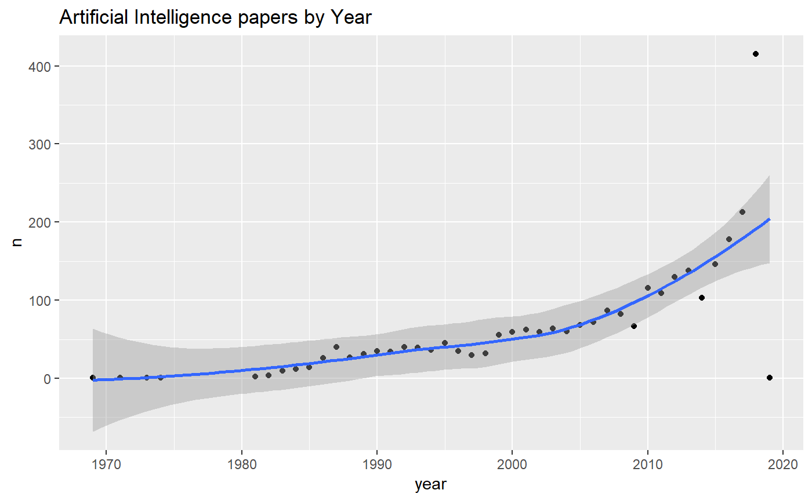
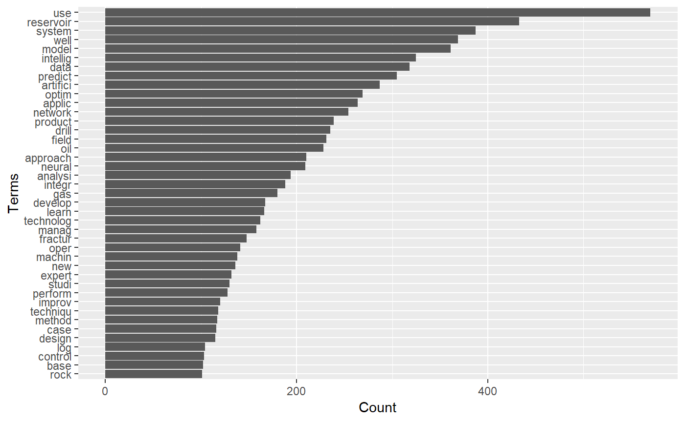
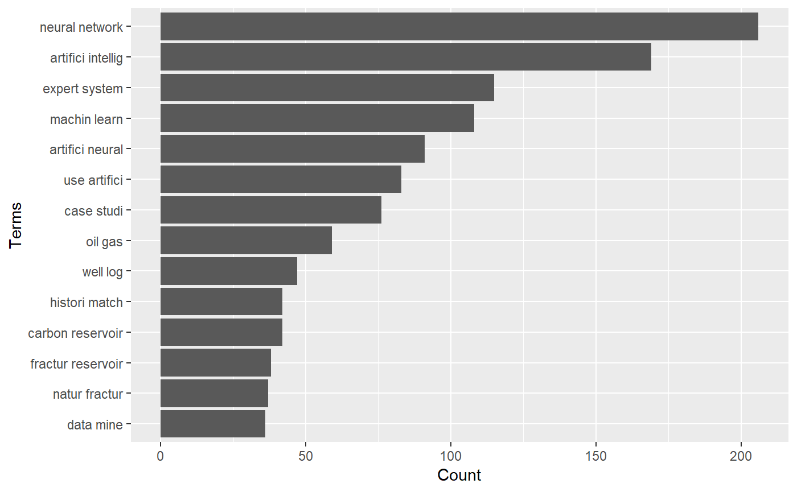

The goal of petro.One is providing a reproducible platform for acquiring and analyzing metadata by searching papers on oil and gas from the OnePetro website.
Motivation
The standard way of searching for papers in OnePetro is using a web browser entering the search terms for a particular paper we are looking for. The result will come as web pages containing dozens, hundreds or thousand of paper titles. We need to browse all the resulting pages to find the papers that have a good match with the subject we are researching. Although it has the capability to export to csv and xls files, they will need to be imported into another application to perform some analysis.
By using some statistical tools available through R, the search could turn in highly profitable in terms of time, matching quality and selection of the papers. The search keywords are entered thorugh the R console and the papers will return in a shape of a dataframe, which is identical to a spreadsheet: rows of paper titles and columns with details from the metadata extracted from the web page. With the dataframe already in our computers we could perform a thorough search and narrow down to the ideal papers for our research.
Installation
You can install petro.One from Github with:
# install.packages("devtools") # install *devtools* first
# install from the *master* release branch
devtools::install_github("f0nzie/petro.One")Or, the latest dvelopment version:
Or from CRAN with:
The package dependencies can be installed with:
What is behind the paper search
A typical OnePetro search URL would look like this:
https://www.onepetro.org/search?q=neural+network&peer_reviewed=&published_between=&from_year=&to_year=
You can see the search string for yourself after you hit enter on a paper search, which could be explained like this:
| Parameter | Description |
|---|---|
| domain | https://www.onepetro.org/ |
| command | search? |
| q= | parameter that holds the query words. In the example above, it would be q=neural+network. As it is shown, it means search any word. |
| peer_reviewed= | parameter switch to get papers than have been only peer reviewed. When it has the value on means that is activated. |
| published_between= |
parameter switch that activates when from_year and to_year have numeric entries. |
| from_year= | parameter to enter the starting year of the search |
| to_year= | parameter to enter the end year of the search. |
There are additional parameters such as:
| Parameter | Description |
|---|---|
| start= | indicate the starting page if the resulting search has several |
| rows= | indicate the number of rows (papers) to display per page. In the web browser, the options are 10, 50 and 100. Off-browser it could be a number up to 1000. |
| sort= | related to the selector Sort By with options Relevance, Most recent and Highest rated. |
| dc_type= | indicates what type of document the paper is. |
These are the type of documents:
chapter
conference-paper
general
journal-paper
presentation
media
other
standardThere are other parameters but they will not be used as often as the ones already described.
They key is build a search URL that is recognizable by OnePetro. To do that I wrote a function make_search_url that does just that. Instead of entering the search keywords, how will they be searched, year and type of paper, we enter them from the R console.
Examples
Get the number of papers for the keyword neural network.
Let’s say we want to search the word neural network. How do we want to perform that search? Paper that contain the word neural or the word network, or papers that contain exactly the words neural network? In the former, we would use the option any, in the latter, all.
The option how = "any" means to search for papers that contain the word neural or the word network. Let’s take a look at the difference in returning results with any and how = all for the same keywords neural network. Here we make of use of two functions in petro.One: make_search_url() and get_papers_count().
library(petro.One)
library(tidyverse)
#> -- Attaching packages ------------------------------------------- tidyverse 1.2.1 --
#> v ggplot2 3.1.0 v purrr 0.2.5
#> v tibble 2.0.0 v dplyr 0.7.8
#> v tidyr 0.8.2 v stringr 1.3.1
#> v readr 1.3.1 v forcats 0.3.0
#> -- Conflicts ---------------------------------------------- tidyverse_conflicts() --
#> x dplyr::filter() masks stats::filter()
#> x dplyr::lag() masks stats::lag()
# search any word like "neural" or "network"
url_any <- make_search_url(query = "neural network", how = "any")
url_any
#> [1] "https://www.onepetro.org/search?q=neural+network&peer_reviewed=&published_between=&from_year=&to_year="
get_papers_count(url_any)
#> [1] 3931
# search for papers that have "neural" and "network" at the same time
url_all <- make_search_url(query = "neural network", how = "all")
url_all
#> [1] "https://www.onepetro.org/search?q=\"neural+network\"&peer_reviewed=&published_between=&from_year=&to_year="
get_papers_count(url_all)
#> [1] 3615Read papers from from_year to to_year
We can send a query where we specify the starting year and the ending year. In this example the option how = "all" means to search papers that contain exactly the words neural network as a difference to any which means search for any occurrence of the words. Of course, using any rather than all will yield many more results. We use two petro.One functions: make_search_url() to build the OnePetro search URL and onepetro_page_to_dataframe() to put the papers in a table.
library(petro.One)
# neural network papers from 1990 to 1999. Exact phrase
my_url <- make_search_url(query = "neural network",
from_year = 1990,
to_year = 1999,
how = "all")
df <- onepetro_page_to_dataframe(my_url)
df
#> # A tibble: 10 x 6
#> book_title paper_id dc_type authors year source
#> <fct> <fct> <fct> <chr> <int> <fct>
#> 1 Deconvolution Using~ SEG-1996~ confere~ Essenreiter, Rober~ 1996 SEG
#> 2 Neural Network Stac~ SEG-1992~ confere~ Schmidt, Jumndyr, ~ 1992 SEG
#> 3 Seismic Principal C~ SEG-1996~ confere~ Huang, Kou-Yuan, N~ 1996 SEG
#> 4 First Break Picking~ SEG-1990~ confere~ Wagner, D.E., Amoc~ 1990 SEG
#> 5 Neural Networks And~ SEG-1995~ confere~ Leggett, Miles, Br~ 1995 SEG
#> 6 Drill-Bit Diagnosis~ SPE-1955~ journal~ Arehart, R.A., Exx~ 1990 SPE
#> 7 Inversion of Seismi~ SEG-1992~ confere~ Ro¨th, Gunter,~ 1992 SEG
#> 8 Artificial Intellig~ SEG-1992~ confere~ Guo, Yi, Center fo~ 1992 SEG
#> 9 Neural Networks In ~ SEG-1991~ confere~ McCormack, Michael~ 1991 SEG
#> 10 Reservoir Character~ SEG-1993~ confere~ An, P., University~ 1993 SEGAnd these are the terms that repeat more freqently:
Get papers by document type (dc_type)
We can also get paper by the type of document. In OnePetro it is called dc_type.
In this example we will be requesting only conference-paper type. Here we add to make_search_url() the parameter dc_type. Note also that we are adding another parameter rows to get 1000 rows instead of 10, 50 or 100 as the browser allows.
# specify document type = "conference-paper", rows = 1000
my_url <- make_search_url(query = "artificial intelligence",
how = "all",
from_year = 1950,
to_year = 1980,
dc_type = "conference-paper",
rows = 1000)
(pcount <- get_papers_count(my_url))
#> [1] 4
df <- onepetro_page_to_dataframe(my_url)
df
#> # A tibble: 3 x 6
#> book_title paper_id dc_type authors year source
#> <fct> <fct> <fct> <chr> <int> <fct>
#> 1 The Realities Of Radio~ OTC-1788~ conferen~ Moyer, James P.~ 1973 OTC
#> 2 Application of Digital~ SPE-2659~ conferen~ Hall, O.P. Jr.,~ 1969 SPE
#> 3 Computer Recognition O~ SPWLA-19~ conferen~ Schoonover, L.G~ 1974 SPWLAOnly 4 on artificial intelligence from 1950 until 1980!
Finding the most frequent terms in well test
For this example we want to know about conference papers where the words well and test are found together in the papers.
library(petro.One)
my_url <- make_search_url(query = "well test",
dc_type = "conference-paper",
from_year = 2017,
to_year = 2018,
how = "all")
get_papers_count(my_url) # get the paper count
#> [1] 956
df <- read_multidoc(my_url) # create a dataframe of papers
print(dim(df)) # dimension of the dataframe
#> [1] 956 6
(tf <- term_frequency(df)) # create a term frequency table
#> # A tibble: 1,977 x 2
#> word freq
#> <chr> <dbl>
#> 1 reservoir 325
#> 2 well 268
#> 3 field 221
#> 4 model 161
#> 5 fractur 160
#> 6 gas 152
#> 7 case 138
#> 8 use 136
#> 9 product 135
#> 10 studi 123
#> # ... with 1,967 more rows
# calculate the minimum frequency for, let's say, the first 20th term
min_freq <- min(head(tf, 20)$freq)
How do the most frequent terms relate each other
Now, it is not enough for us to know what terms are the more repeating but how those freqent terms relate to each other. In the following plot you will see that the strength of the relationship between terms is reflected by the thickness of the connection lines.

We can see that wells and well are connected strongly to horizontal, transient, pressure, flow, testing, reservoirs, fracture, and analysis. The rest of the words are frequent but not very much connected.
Text Mining
Providing multiple keywords
library(petro.One)
library(tidyverse)
# provide two different set of keywords to combine as vectors
major <- c("artificial intelligence")
paper_results <- run_papers_search(major,
get_papers = TRUE, # return with papers
verbose = FALSE, # show progress
len_keywords = 4, # naming the data file
allow_duplicates = FALSE) # by paper title and id
#>
#> NULL
(papers <- paper_results$papers)
#> # A tibble: 2,786 x 7
#> book_title paper_id dc_type authors year source keyword
#> <fct> <fct> <fct> <chr> <int> <fct> <chr>
#> 1 Artificial Inte~ SPE-19282~ confere~ Hojageldiyev~ 2018 SPE 'artifi~
#> 2 Production Moni~ SPE-14959~ confere~ Olivares Vel~ 2012 SPE 'artifi~
#> 3 Estimating Dewp~ SPE-16091~ confere~ Alarfaj, Mal~ 2012 SPE 'artifi~
#> 4 Profiling Downh~ SPE-17342~ confere~ AlAjmi, Moha~ 2015 SPE 'artifi~
#> 5 Artificial Inte~ SPE-16950~ confere~ Shahkarami, ~ 2014 SPE 'artifi~
#> 6 Forecasting Inc~ ASSE-07-1~ confere~ Al-Mutairi, ~ 2007 ASSE 'artifi~
#> 7 Formation Dip D~ SPWLA-198~ journal~ Kerzner, Mar~ 1983 SPWLA 'artifi~
#> 8 Multilateral We~ SPE-18350~ confere~ Al-Mashhad, ~ 2016 SPE 'artifi~
#> 9 Artificial Inte~ SPE-19155~ confere~ Gupta, Supri~ 2018 SPE 'artifi~
#> 10 Application of ~ SPE-15908~ general Gangopadhyay~ 1986 SPE 'artifi~
#> # ... with 2,776 more rows# plot on AI by year of publication
papers %>%
group_by(year) %>%
na.omit() %>%
summarize(n = n()) %>%
ggplot(., aes(x = year, y = n)) +
geom_point() +
geom_smooth(method = "loess") +
labs(title = "Artificial Intelligence papers by Year")
tf <- term_frequency(papers)
tf
#> # A tibble: 3,174 x 2
#> word freq
#> <chr> <dbl>
#> 1 use 570
#> 2 reservoir 433
#> 3 system 387
#> 4 well 369
#> 5 model 361
#> 6 intellig 325
#> 7 data 318
#> 8 predict 305
#> 9 artifici 287
#> 10 optim 269
#> # ... with 3,164 more rows# one word or gram
term_frequency_n_grams(df = papers, gram.min = 1, gram.max = 1)
#> # A tibble: 3,174 x 2
#> word freq
#> <chr> <dbl>
#> 1 use 570
#> 2 reservoir 433
#> 3 system 387
#> 4 well 369
#> 5 model 361
#> 6 intellig 325
#> 7 data 318
#> 8 predict 305
#> 9 artifici 287
#> 10 optim 269
#> # ... with 3,164 more rows# calculate the minimum frequency for, let's say, the first 20th term
(min_freq <- min(head(tf, 20)$freq))
#> [1] 188
# by default the number of grams is two (2)
tf2 <- term_frequency_n_grams(papers)
tf2
#> # A tibble: 13,628 x 2
#> word freq
#> <chr> <dbl>
#> 1 neural network 206
#> 2 artifici intellig 169
#> 3 expert system 115
#> 4 machin learn 108
#> 5 artifici neural 91
#> 6 use artifici 83
#> 7 case studi 76
#> 8 oil gas 59
#> 9 well log 47
#> 10 carbon reservoir 42
#> # ... with 13,618 more rows
